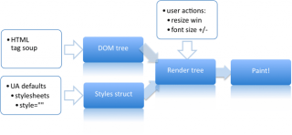
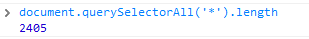
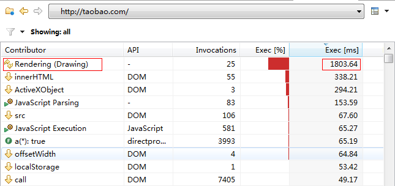
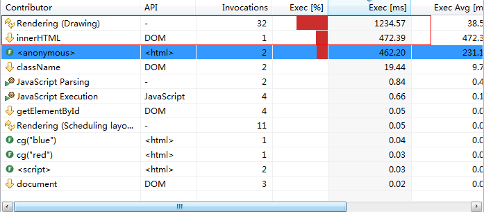
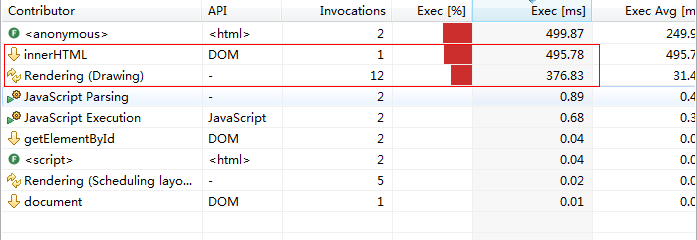
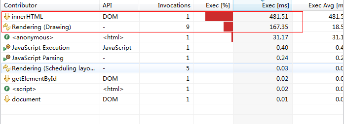
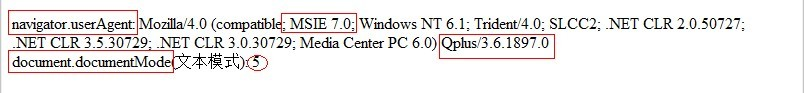

渲染性能（Render Performance）
-
测试重点：
- DOM的reflow和repaint性能
- webkit下canvas矢量绘制性能
- 什么是reflow和repaint
- reflow和repaint对页面性能有什么影响？
- 测试case和工具
- 测试结果
- 总结
什么是reflow和repaint
通常情况，浏览器渲染页面过程如下图所示：

- 解析HTML代码并生成一个 DOM 树。
- 解析CSS文件，顺序为：浏览器默认样式->自定义样式->页面内 的样式
- 生成一个渲染树（render tree）。这个渲染树和DOM树的不同之处在于，它是受样式影响的。它不包括那些不可见的节点。
- 当渲染树生成之后，浏览器就会在屏幕上“画”出所有渲染树中的节点。
- 什么是reflow： reflow 是指渲染树中的一些节点被重新验证或者大小被重新计算。一个页面至少会在初始化的时候 reflow 一次。
- 什么是repaint： repaint 是指屏幕中的一些显示需要更新，比如更改了某个元素的背景颜色。同样，一个页面至少会在初始化的时候repaint一次。
reflow和repaint对页面性能有什么影响？
通常情况下，reflow和repaint耗时都是以ms计，一般一次操作能使render耗时超过100ms的都比较少见了。所以大多数人也就忽略了他们的影响。
但是遇到一些复杂的，需要大量dom支撑的页面。比如像taobao的首页，估计光是dom元素的个数就要以千记了。

Dom元素已经超过2k个了，而且还不包括iframe里面的渲染。接下来我们来看看抛开加载所耗时之外，浏览器渲染这个页面所耗的时间花在哪里？看下图：

上面图示为taobao首页渲染过程中 耗时 前十位的列表， 毫无疑问，渲染（render）稳居第一位，而且耗时还很惊人，1803ms，也就是1.8s，接近两秒的时间花在了渲染上面（所有元素）... 这是在IE9标准渲染模式下做的测试，可见render性能对于用户感知的页面性能影响有多大。
同时，reflow和repaint的性能好坏也直接由浏览器内核决定。所以这一项也是测试浏览器性能的一项重要指标。
关于渲染性能的测试用例和工具
由于渲染性能不像加载过程，有很多抓包工具和http分析工具可以拿到整个加载过程。相对而言，用于测试渲染性能的工具就少很多。
为了可以直观的感受到repaint对于页面性能的影响，我这里做了个简单的极端测试的页面，5w个dom元素repaint时耗时直观测试，可在不同浏览器，或者Q+中试试
另外这里推荐一个强大的监控性能的工具 DynaTrace Ajax Edition 目前虽然只支持IE8~10， firefox 两种浏览器，但是它能分析的项远超过其他web性能分析工具。不仅仅对于页面加载过程能实时监控和分析，对页面解析过程也能监控和分析。其中当然也包括对于render，渲染过程的分析，甚至可以细化到reflow和repaint分开的过程。
虽然Dynatrace 这个工具没法直接测试Q+ 中 对于页面渲染的性能。但是我们能通过它测试的不同版本的IE性能，在结合Q+中IE内核渲染模式的判断来推断出Q+ 中IE内核 渲染性能的大致情况。下面详述。
关于测试过程和结果
我们可以先看下不同版本的IE在渲染上的性能差异吧。虽然 Dynatrace 说只支持IE8 到IE10， 不过我们可以利用IE9的兼容模式，让浏览器强制用IE7的渲染模式来渲染页面，也可以大概测出IE7的渲染性能。
以下以那个极简的页面（http://hongru.github.com/test/reflow-repaint.html）为用例测试IE7，8，9，不同版本的内核渲染性能。
-
IE7.0
我们主要看红框圈出来那部分，innerHTML的操作属于reflow的范畴，rendering就是渲染的指标，由于我这个测试页面，dom结构很简单，就是一个表格，没有什么深的dom层级，也没有各种不同的dom标签。仅仅是元素个数多一点而已。可以看到，在IE7的渲染模式下，主要时间都花在了rendering渲染上面，花了1234ms才渲染完毕，而reflow也花了400+ms。
-
IE8.0
同样对比rendering和reflow的时间，可以发现，reflow（innerHTML）的操作基本和IE7的渲染模式一致，但是rendering的时间得到了大幅的降低，从1200多ms降到了376ms，降幅达到70%，可见IE8的渲染模式上，渲染性能比IE7提高了70%左右。
-
IE9.0
我们按同样的方式，对比红框中的两项，可以发现，reflow的时间基本没什么变化，但是repaint，也就是rendering的时间，比之ie8，再次得到提升，降到了167ms降幅又达到将近60%。
据此，我们可以推断，渲染模式对于渲染性能有质的影响，虽然在reflow的方面不太明显，但是在rendering的方面，明显的，
- IE7~9的渲染模式，reflow的性能基本差别不大。但是repaint的性能有很大差距。
- IE9渲染模式下渲染性能是IE8的2.2倍左右， 是IE7渲染性能的7倍有余
- IE8渲染性能也是IE7模式的3倍有余
- IE6和IE10，由于环境原因，没法得定量的数据，不过定性的分析，IE6应该比IE7更低。IE10应该和IE9相当，或者比IE9略高。
-
看看Q+中IE内核的渲染模式
可以通过userAgent和documentMode来判断，经测试发现，在 系统IE版本 <= 7.0的时候，Q+中IE内核的渲染模式和系统IE内核保持一致。比如系统装IE6，那么Q+IE内核渲染模式当然也是IE6，IE7也是。但是当系统升级到 >= 8.0的IE版本之后，可以发现，Q+中取用的渲染模式依旧是IE7.0的渲染模式。即便用户已经升级IE到9.0，10.0。
Q+ 3.6的userAgent（系统装IE9）

容易发现，即便用户已经装了IE9，使用最新版本的Q+，但是IE的渲染UA依旧停留在7.0。
我们知道，IE有个浏览器模式和文本模式的选项。分别代表浏览器处理盒模型和文本解析的模式。通常在IE的开发者工具中可以看到。
通常我们脚本里面的document.documentMode 就表示当前使用的文本模式。文本模式除了浏览器本身跟着版本走的一个标准模式外，还有个Quicks模式。（怪癖模式），通常都是5。我们接着来看看Q+中的 IE 的docuemnt.documentMode 是多少。结果有点出人意料，不管系统原生的浏览器版本为多少，ie6也好，ie7也好...或者IE9，他们的documentMode统一都是5. 如下图：(依旧是我在系统装IE9的情况下的测试) 
从这一点上，可以推断Q+IE内核 的渲染性能是低于系统自带最高版本的IE内核的。具体低的数据可以参考上面对于IE内核不同版本的渲染性能测试数据。
- 不管用户当前IE版本为多少，Q+中文本模式都为Quicks模式，即document.docuemntMode为5
- 用户系统IE版本为6.0时，Q+ 的IE userAgent为MSIE6.0， 和系统保持一致。
- 用户系统IE版本大于等于7.0时，Q+ 的IE userAgent统一为 MSIE7.0，渲染性能 只能 和IE7 持平。低于IE8 的渲染性能3倍，低于IE9的渲染性能7倍。
-
Q+ webkit 渲染性能
- Dom树的reflow和repaint的性能
从userAgent上来看，Q+使用的chrome webkit内核版本为 10.0， 根据目前官方数据，chrome目前 最新稳定版本已经到 18.0， 官方统计，chrome15 版本以上，在渲染性能上有大概2.5~3倍的提升，如果按这个数据的话。那么Q+的webkit 在dom的渲染性能上应该也会低于chrome18，3倍左右。 -
webkit上对于canvas这种画布元素重绘的性能
由于canvas重绘的性能很难直接拿到对应的单方面的数据，通常我们的测试用例都和js的执行效率也有关系。所以这一块我放到后面【综合测试】里面。里面会有很多针对canvas这种元素绘制特效性能的综合用例分析。
- Dom树的reflow和repaint的性能
【总结】
- 不管用户当前IE版本为多少，Q+中文本模式都为Quicks模式，即document.docuemntMode为5
- 用户系统IE版本为6.0时，Q+ 的IE userAgent为MSIE6.0， 和系统保持一致。
- 用户系统IE版本大于等于7.0时，Q+ 的IE userAgent统一为 MSIE7.0，文本模式也始终为Quicks模式。
- 意味着，不论用户系统IE版本已经升级到多少了，Q+IE 的内核渲染性能最多只能和IE7持平，低于IE8 的渲染性能3倍，低于IE9的渲染性能7倍。
- 根据google官方提供的数据，在webkit方面，对于dom的reflow和渲染方面，目前Q+的webkit应该低于 chrome18， 3倍左右。